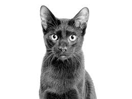

Par kaķi
 Mājas kaķis jeb kaķis (Felis silvestris catus), arī domesticētais kaķis ir mazs, plēsīgs kaķu dzimtas zīdītājs, kas apmēram pirms 12 000 gadiem pieradināts Mezopotāmijas reģionā.Kaķis ir ļoti populārs mājdzīvnieks, jo palīdz cilvēkam cīnīties ar dažādiem kaitēkļiem, piemēram, pelēm, čūskām un pat skorpioniem. Mājas kaķa tēviņus dēvē par runčiem, bet mātītes — par kaķenēm.